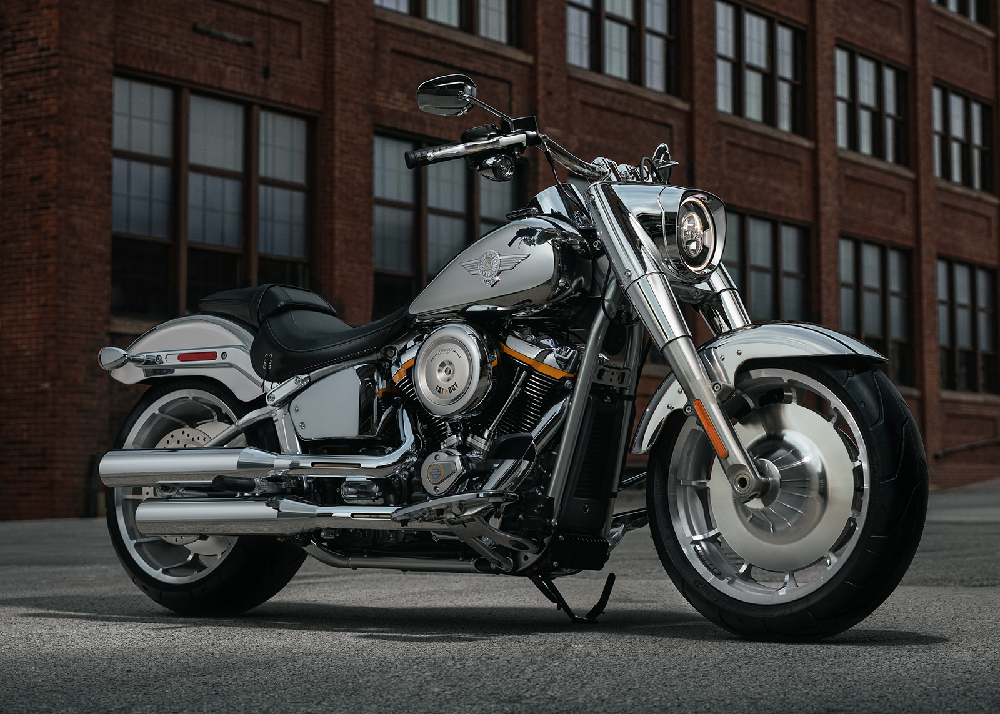

Historie Harley-Davidson
Harley-Davidson byla založena v roce 1903 v Milwaukee ve Wisconsinu čtyřmi mladými muži — Williamem Harleym a bratry Arthurem, Walterem a Williamem Davidsonovými. První motocykl byl postaven v malé dřevěné kůlně o rozměrech 3×5 metrů. Na dveřích kůlny byl napsán nápis „Harley-Davidson Motor Company".
Během první světové války dodala Harley-Davidson americké armádě přes 20 000 motocyklů. Firma se tak etablovala jako spolehlivý výrobce a počet dealerů rychle rostl po celém světě. Ve 20. a 30. letech Harley-Davidson soupeřila s firmou Indian o titul největšího výrobce motocyklů v Americe.
Po druhé světové válce se Harley-Davidson stal symbolem americké svobody. Vrátivší se vojáci zakládali motorkářské kluby a ikonický zvuk V-Twin motoru se stal součástí americké kultury. Film Perský výnos z roku 1969 s Peterem Fondem a Dennisem Hopperem udělal z Harley-Davidson symbol protestu a svobody.
Dnes Harley-Davidson čelí výzvě oslovit mladší generaci jezdců. Firma uvádí nové modely jako Pan America pro adventure segment a elektrický LiveWire. Přesto zůstává Harley-Davidson jednou z nejsilnějších značek na světě s fanaticky oddanými fanoušky.
Novinky 2025
Harley-Davidson představil pro rok 2025 nový Nightster Special v limitované edici s grafikou inspirovanou původními Sportster modely z 50. let. Řada Pan America dostala verzi s nižším sedlem pro menší jezdce.
Elektrická divize LiveWire pokračuje jako samostatná značka s novými modely Del Mar — lehkým elektrickým motocyklem pro každodenní použití. Harley-Davidson také oznámil plány na nové středorozsahové modely cílené na asijský trh.